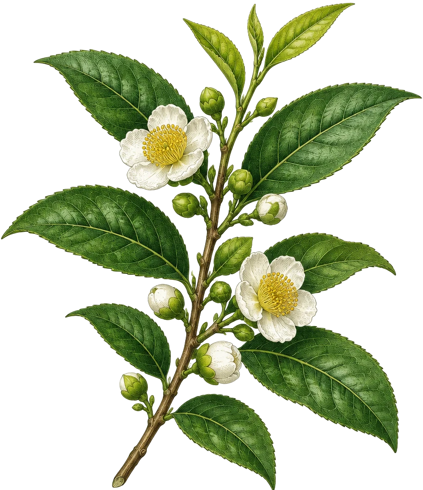
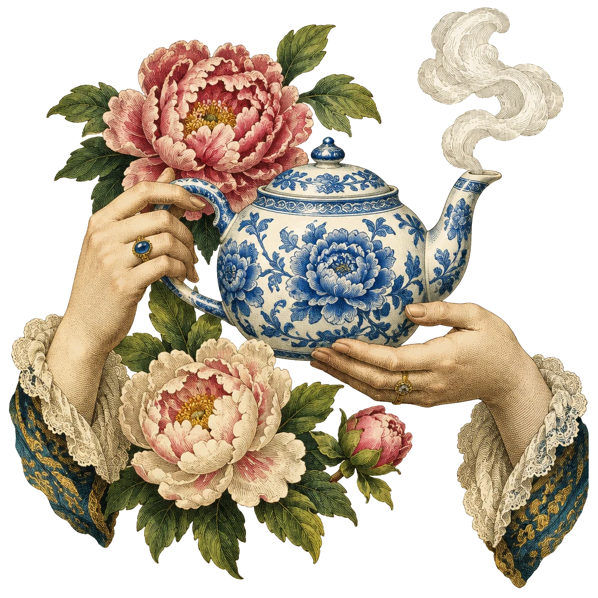
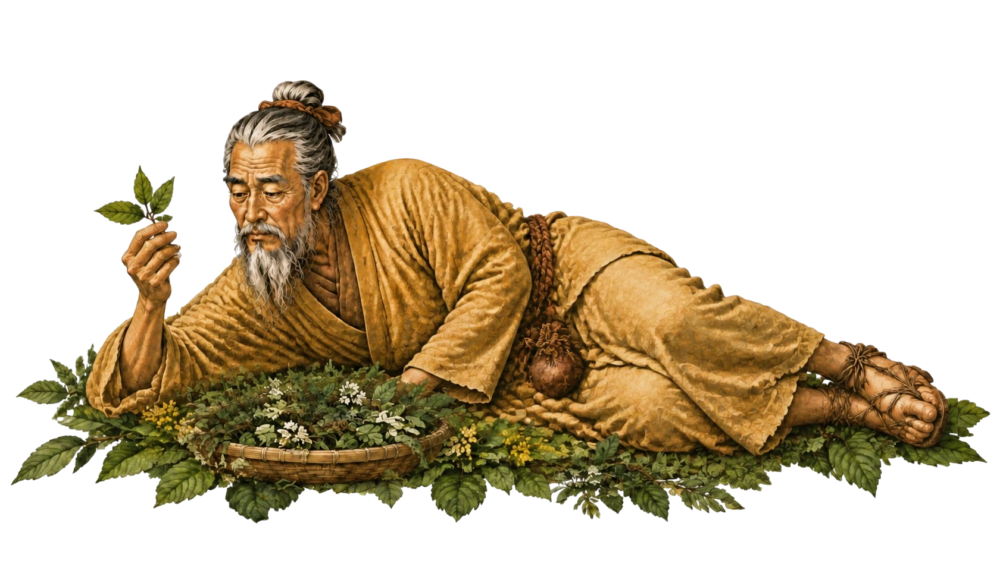
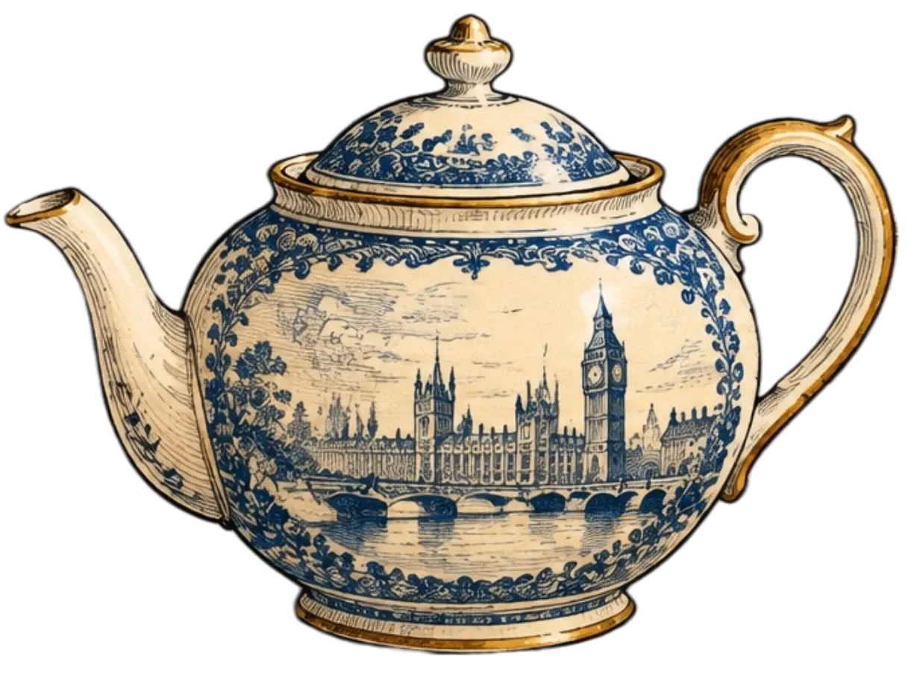
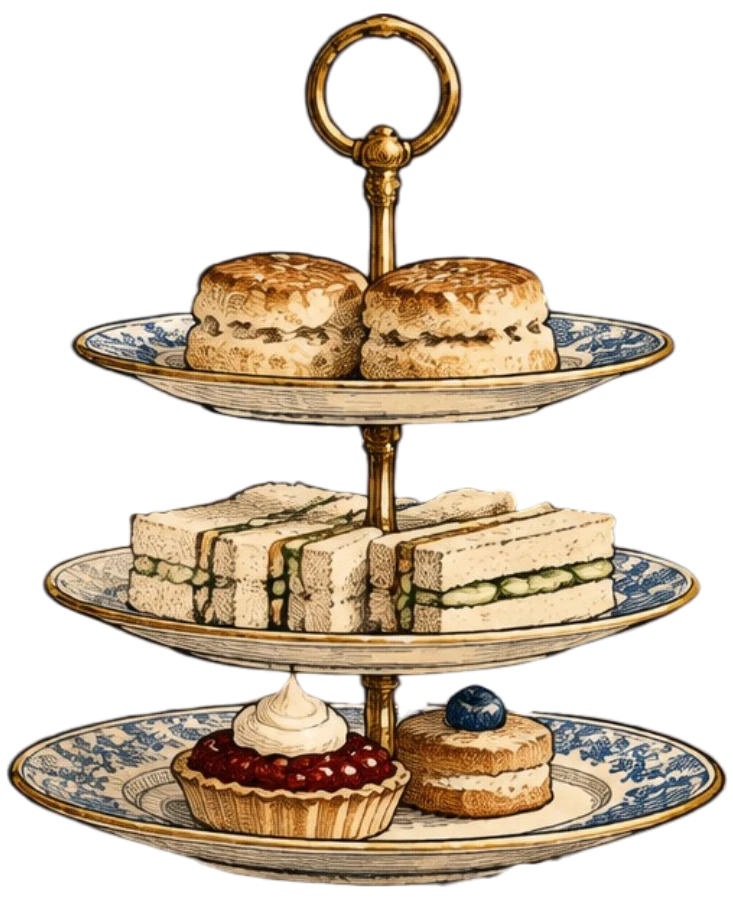
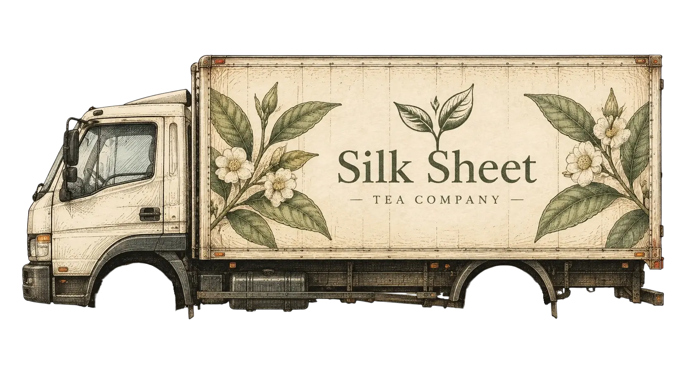
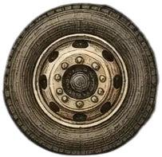
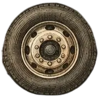

2737
BC
A leaf that fell into the cauldron
According to legend, Emperor Shen Nong was boiling water under a camellia bush. The wind blew off a few leaves, and thus the world's first tea was born.
Five thousand years, one leaf and some hot water



Chapter One
Shen Nong, the "Divine Farmer," tried hundreds of herbs to discover which ones were healing. One day, wild camellia leaves fell into a cauldron of boiling water, and the water turned golden. He named the drink "cha," meaning "test." Ever since, tea has tested people's patience.
Chapter Third
Tea clippers were the fastest sailing ships of their century. In 1866, the ships Ariel and Taeping had one of the most famous races in the history of the tea trade. Their journey from Fuzhou in China to London took 99 days. They crossed oceans, rounded capes, and battled the wind. That’s how tea became not just a drink, but also a symbol of sea adventures, trade, and connections between East and West.


Chapter Four
In the 17th century, tea was a rare and expensive curiosity. At first, it was for wealthy families, then for increasingly wider layers of society. In the 19th century, afternoon tea — a post-lunch tea with small sandwiches and sweets — became particularly popular. Since then, a cup of tea has become a reason for Britons to pause and spend time together.



Chapter Five: Today
Since 1998, Silk Sheet has been sourcing tea directly from family-owned plantations in Fujian, Yunnan, and Wuyi Mountains. We taste every batch ourselves and sell only what we drink at home.
oolong · Wuyishan
Smoke, dark honey, baked plum
$80 / 50 g
white · Fujian
Silver buds, melon, meadow flowers
$90 / 50 g
Dark Yunnan
Wet forest, cocoa, dried cherry
$60 / 100 g
Herbal · London Region
Fermented according to an 18th-century recipe
$85 / 50 g
Five teas, Yixing clay, a master at your table
90 minutes
$50 per table
A charcoal samovar from the 1890s, jam, buns, and fireweed.
2 hours
$100 per company
We learn to hear the leaf: temperature, water, time, dishes.
3 hours
$30 per person
Click me